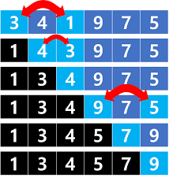
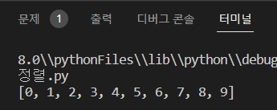

알고리즘
선택 정렬
학교: 대진대학교 전공: AI 빅데이터 학번: 20191624 이름: 신봉균
선택 정렬은 가장 간단한 정렬 알고리즘 중 하나입니다. 주어진 배열에서 최소값을 선택하여 정렬되지 않은 부분의 첫 번째 요소와 교환하는 방식으로 동작합니다.

선택 정렬은 다음과 같은 단계로 이루어집니다:
- 주어진 배열에서 최소값을 찾습니다.
- 최소값을 현재 정렬되지 않은 부분의 첫 번째 요소와 교환합니다.
- 정렬되지 않은 부분의 범위를 하나씩 줄여나갑니다.
- 정렬이 완료될 때까지 위의 과정을 반복합니다.
선택 정렬은 평균 시간 복잡도가 O(n^2)으로 비효율적인 알고리즘입니다. 그러나 구현이 간단하며 작은 크기의 배열에는 효과적일 수 있습니다.
파이썬으로 구현한 선택정렬 코드

아까 말한 단계대로 첫번째로 주어진 배열에서 최소값을 찾고 최소값을 현재 정렬되지 않은 부분의 첫 번째 요소와 교환한고 정렬되지 않은 부분의 범위를 하나씩 줄여나갑니다.
정렬이 완료될 때까지 과정을 반복해준다.
결과 화면:
